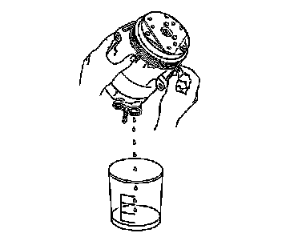

Air Conditioning Compressor Oil Balancing
Compressor Oil Balancing
Draining Procedure
Important: Drain and measure as much of the refrigerant oil as possible from the removed compressor.
1. Drain the oil from both the suction and discharge ports of the removed compressor into a clean, graduated container. Rotate the compressor shaft to assist in draining the compressor.

2. Measure and record the amount of oil drained from the removed compressor. This measurement will be used during installation of the replacement compressor.
3. Properly discard the used refrigerant oil.
Balancing Procedure
Important: The refrigerant oil in the A/C system must be balanced during compressor replacement.
1. Before installing the compressor, the refrigerant oil will have to be fully drained.
2. Add back the same quantity of polyalkylene glycol (PAG) oil as drained from the removed compressor.
Refer to the amount of refrigerant oil recorded during the compressor removal.